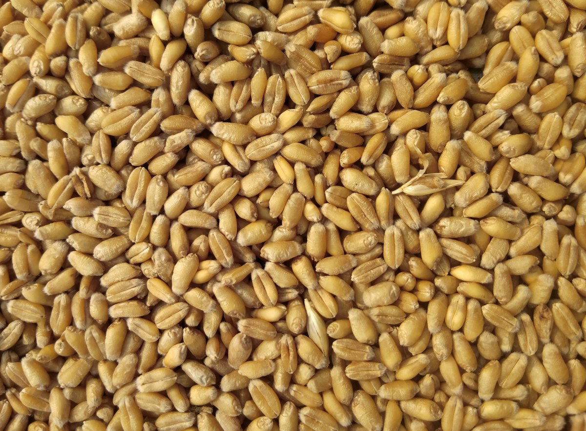

Wheat + Mustard fertilizer schedule for Sirohi soil (Rabi 2026)

Sirohi's sandy-loam soils (रेतीली दोमट) are low in organic matter and often zinc/sulphur deficient. This schedule gives indicative per-acre doses — final dose must follow your Soil Health Card + KVK Sirohi advice.
1. Wheat (गेहूं) — Oct end to Nov sowing
| Stage | What to apply (per acre, indicative) | Note (नोट) |
|---|---|---|
| Basal at sowing (बुवाई) | ~55 kg DAP + ~25 kg MOP | Drill 4–5 cm below seed; never mix urea with seed |
| Crown-root initiation (21–25 days, पहली सिंचाई) | ~45 kg urea with irrigation | Most important urea split |
| Tillering (45–50 days) | ~30–40 kg urea + zinc spray if pale | See zinc guide |
| Flowering | No nitrogen; protect from heat stress | Light irrigation only if needed |
2. Mustard (सरसों) — October sowing
| Stage | What to apply (per acre, indicative) | Note |
|---|---|---|
| Basal | ~40 kg DAP + ~15 kg sulphur (as advised) | Sulphur lifts oil content |
| 25–30 days | Light urea (~20–25 kg) only if pale | With first irrigation |
| Flowering | Foliar micro-mix if recommended | Avoid excess N — delays maturity |
3. Three mistakes to avoid
1) DAP on top late — phosphorus must go basal; top-dressed P barely reaches roots.
2) Urea without water — always sync urea with irrigation or evening dew.
3) Skipping sulphur/zinc — cheapest yield gain in this belt.
FAQ
Should I trust a fixed bag count from YouTube?
No — soil, variety and last crop change everything. Use tables above as starting point, then confirm on WhatsApp with your acre + village.
Can I mix compost to reduce DAP?
Yes — 2–4 quintal vermicompost/acre lets many farmers trim ~10–15% basal P after 2 seasons. See cost-saving mix.
Free per-field plan: WhatsApp crop + acre + village + last crop to +91 79786 01417 — reply same day. Or call +91 79786 01417 · tripathychinmayee1@gmail.com